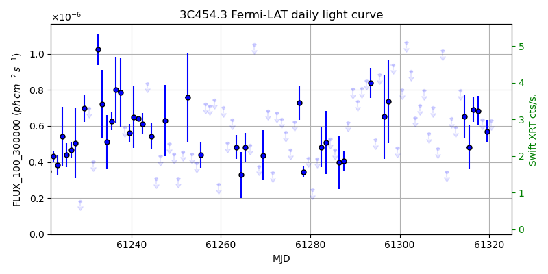
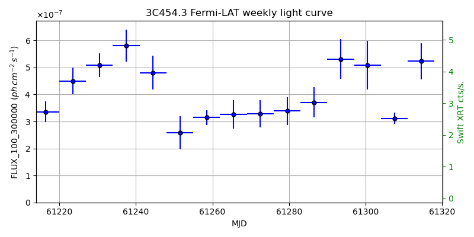
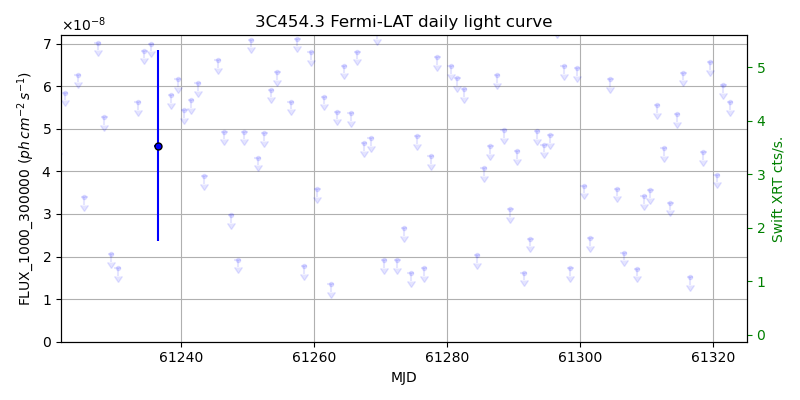
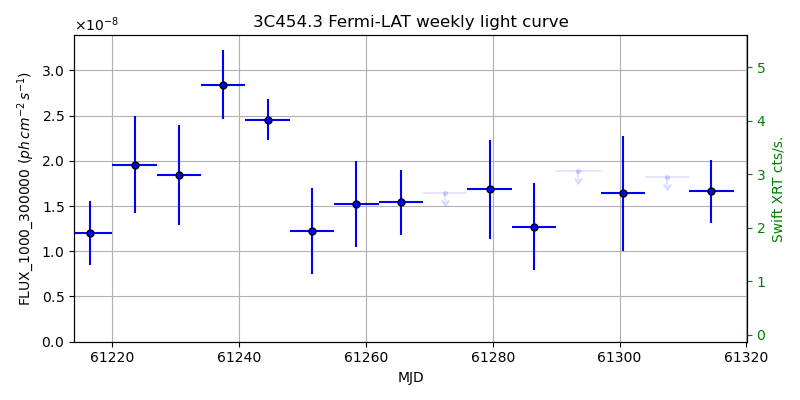

LAT Lightcurve site: https://fermi.gsfc.nasa.gov/ssc/data/access/lat/msl_lc/source/3C_454d3
Swift site: https://www.swift.psu.edu/monitoring/source.php?source=3C454.3
NED: Query
Time of last update of this page: UT: 2026-10-10 15:31 (MJD: 61323.647)
| Property | Value |
|---|---|
| R.A. | 22:53:57.84 |
| Dec. | 16:08:52.8 |
| z | 0.858 |
| 3FGL SpectrumType | PLSuperExpCutoff |
| 3FGL PL Index | |
| 3FGL Flux_100_300000 | 2.39e-06 1 / (s cm2) |
| 3FGL Flux_1000_300000 | 1.06e-07 1 / (s cm2) |
| 3FGL Flux >200 GeV | 7.45e-14 1 / (s cm2) |
| 3FGL Extrap. Crab >200 GeV | 0.00 |
| 3FGL Flux After EBL Absorption >200GeV | 4.70e-15 1 / (s cm2) |
| 3FGL EBL Crab Fraction >200GeV | 0.00 |

| MJD | dMJD | Flux | dFlux | Frac3FGL | FracCrab>200GeV | EBLFracCrab>200GeV |
|---|---|---|---|---|---|---|
| 61318.50 | 0.50 | 6.33e-07 | 0.00e+00 | 0.00 | 0.00 | 0.00 |
| 61319.50 | 0.50 | 5.71e-07 | 6.20e-08 | 0.24 | 0.00 | 0.00 |
| 61320.50 | 0.50 | 6.30e-07 | 0.00e+00 | 0.00 | 0.00 | 0.00 |
| 61321.50 | 0.50 | 1.45e-06 | 0.00e+00 | 0.00 | 0.00 | 0.00 |
| 61322.50 | 0.50 | 1.59e-06 | 0.00e+00 | 0.00 | 0.00 | 0.00 |

| MJD | dMJD | Flux | dFlux | Frac3FGL | FracCrab>200GeV | EBLFracCrab>200GeV |
|---|---|---|---|---|---|---|
| 61286.50 | 3.50 | 3.71e-07 | 5.61e-08 | 0.15 | 0.00 | 0.00 |
| 61293.50 | 3.50 | 5.32e-07 | 7.25e-08 | 0.22 | 0.00 | 0.00 |
| 61300.50 | 3.50 | 5.09e-07 | 8.91e-08 | 0.21 | 0.00 | 0.00 |
| 61307.50 | 3.50 | 3.12e-07 | 2.06e-08 | 0.13 | 0.00 | 0.00 |
| 61314.50 | 3.50 | 5.23e-07 | 6.70e-08 | 0.22 | 0.00 | 0.00 |

| MJD | dMJD | Flux | dFlux | Frac3FGL | FracCrab>200GeV | EBLFracCrab>200GeV |
|---|---|---|---|---|---|---|
| 61318.50 | 0.50 | 4.45e-08 | 0.00e+00 | 0.00 | 0.00 | 0.00 |
| 61319.50 | 0.50 | 6.57e-08 | 0.00e+00 | 0.00 | 0.00 | 0.00 |
| 61320.50 | 0.50 | 3.92e-08 | 0.00e+00 | 0.00 | 0.00 | 0.00 |
| 61321.50 | 0.50 | 6.02e-08 | 0.00e+00 | 0.00 | 0.00 | 0.00 |
| 61322.50 | 0.50 | 5.62e-08 | 0.00e+00 | 0.00 | 0.00 | 0.00 |

| MJD | dMJD | Flux | dFlux | Frac3FGL | FracCrab>200GeV | EBLFracCrab>200GeV |
|---|---|---|---|---|---|---|
| 61286.50 | 3.50 | 1.27e-08 | 4.79e-09 | 0.12 | 0.00 | 0.00 |
| 61293.50 | 3.50 | 1.89e-08 | 0.00e+00 | 0.00 | 0.00 | 0.00 |
| 61300.50 | 3.50 | 1.64e-08 | 6.36e-09 | 0.16 | 0.00 | 0.00 |
| 61307.50 | 3.50 | 1.82e-08 | 0.00e+00 | 0.00 | 0.00 | 0.00 |
| 61314.50 | 3.50 | 1.66e-08 | 3.48e-09 | 0.16 | 0.00 | 0.00 |
--------------------------------------------------------- Using user-supplied coords: 22:53:57.84 16:08:52.8 2000 --------------------------------------------------------- FLWO UT night of: 2026-10-11 Local Sid. @ Midnight: 00:55 Sunset (-15.0) (local, UT): 19:04 02:04 Sunrise (-15.0) (local, UT): 05:18 12:18 Moonrise (local, UT): Moonset (local, UT): Moon phase: 0.01 --------------------------------------------------------- AzTime LSID UT Obj_el Obj_az Mn_el Mn_az Sep. --------------------------------------------------------- 19:04 19:58 02:04 47.2 100.5 -16.1 264.2 146.1 19:34 20:29 02:34 53.5 106.2 -22.3 267.8 145.8 20:04 20:59 03:04 59.5 113.4 -28.5 271.5 145.6 20:34 21:29 03:34 65.1 123.2 -34.7 275.4 145.3 21:04 21:59 04:04 70.0 137.1 -40.8 279.7 145.0 21:34 22:29 04:34 73.5 157.5 -46.8 284.6 144.7 22:04 22:59 05:04 74.6 183.8 -52.7 290.5 144.4 22:34 23:29 05:34 72.8 208.8 -58.4 297.7 144.1 23:04 23:59 06:04 68.8 227.3 -63.6 307.3 143.8 23:34 00:29 06:34 63.6 239.9 -68.1 320.3 143.5 00:04 00:59 07:04 57.9 248.8 -71.3 338.2 143.2 00:34 01:29 07:34 51.8 255.5 -72.6 0.4 142.8 01:04 01:59 08:04 45.5 260.9 -71.5 22.7 142.5 01:34 02:30 08:34 39.2 265.6 -68.3 40.8 142.2 02:04 03:00 09:04 32.8 269.7 -63.9 54.1 141.9 02:34 03:30 09:34 26.4 273.6 -58.7 63.8 141.6 03:04 04:00 10:04 20.0 277.3 -53.1 71.2 141.2 03:34 04:30 10:34 13.7 280.9 -47.3 77.2 140.9 04:04 05:00 11:04 7.5 284.6 -41.4 82.2 140.7 04:34 05:30 11:34 1.6 288.4 -35.3 86.6 140.4 05:04 06:00 12:04 -3.6 292.4 -29.2 90.6 140.1 05:18 06:14 12:18 -7.3 294.3 -26.5 92.4 140.0 --------------------------------------------------------- Dark hours >55 deg.: 4.61 srcstart (UT): 2026-10-11 02:41 srcend (UT): 2026-10-11 07:18